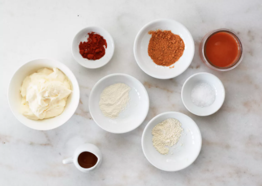

Copycat Cookin'
Copycat Popeyes Chicken Sandwich
Jump to Recipe / Print Recipe / [FRYING]
Prep Time: 1h min. - 24h max.
Cooking Time: 30 min.
For as long as I can remember - I've been dreaming about that Popeyes Spicy Chicken sandwich that I got in Orlando, Florida on my yearly trip to Disney. Now finally in Canada, we're just starting to see the sandwich arrive in certain cities. Prior to that, I had no other option but to create my own copycat recipe. Time and time again, fry after fry after fry - I've spent a good amount of time perfecting this recipe. I might even argue that it's better than it's American counterpart. So, cheers to the greasy flavourful fried ball of goodness we all know and love (but better).
Ingredients
General
- preferred but optional - japanese milk buns - we have the recipe for these! it can be found here
- if not, a classic brioche bun from the grocery store can work
- sweet and sour pickles
Marinade
- 2 cups buttermilk
- 2 teaspoons of salt
- 2 teaspoons of garlic powder
- 1 teaspoon of serrano or chili powder
Breading
- 3 cups all purpose flour
- 2.5 teaspoons of salt
- 1.5 teaspoons of smoked paprika
- 2 teaspoons of garlic powder
- .5 teaspoon of black pepper
- for optional spice - add 1 teaspoon of cayenne pepper
Mayo
- 3/4 cup of mayo
- 8 cloves of smashed black garlic
- 1 tablespon of spicy hot sauce
- 1 teaspoon of smoked paprika
- pinch of salt for taste
- pinch of lemon juice for taste
Preparation
For the mayo...
To make the spicy mayo, whisk all ingredients together in a small bowl.
Marinating
Whisk-y Business
Whisk all ingredients together in a medium sized bowl.
Submerging
Completely submerge the chicken into the marinade and marinate for at least 1 hour. If desired, you can marinate for up to 24h.
Breading
Whisk-y Business
Whisk the flour and spices together to create the breading for the chicken.
Smokin' Coatin'
Coat the chicken in the breading - make sure to get every nook and cranny! Don't be afraid to really push the chicken in the flour. Shake and set aside when done.
It's Fryin' Time!
Frying Set Up
The Essentials
In a large deep pan or med size pot - fill a little over halfway with oil for frying - make sure there is depth to the pan. Ensure there is at least a couple inches of oil and fill the pan with a fry thermometer. Heat the oil to 350 degrees F.
Frying Process
Hot n' Ready
Once at temp, drop in a piece of breaded chicken carefully and fry - try to maintain that temp the best you can for about 6-10 minutes or until golden brown - don't overcrowd the fryer! One chicken at a time.
Cooling Process
Vibe on the Side
Once internal temp is 165 degrees F, take chicken out of the fryer and place on a cooling rack to cool for at least 10 mins.
Assembly
Finishing Touches
While the chicken is cooling, slice the pickles to desired length and toast the buns with butter.
Final Product
When the chicken is cooled and everything is prepared, it's time to assemble! First - nice buttery toasted bun, next - add the spicy mayo and pickles - and finally, the chicken. You know how this works. Now go and enjoy that wonderful cripsy chicken sandwich!